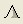

Appendix A. DATA PROCESSING INSTRUCTIONS
| |
|
| |
by John Maurer <>
A.1. Opening Files In ENVI
A.2. Subsetting
A.3. Filtering
A.4. Tracing Layers
A.5. Creating 3-D Surfaces
A.6. Computing Statistics
This Appendix provides some guidelines on how the Malå Geoscience RAMAC™ (http://ramac.malags.com) ground-penetrating radar (GPR) data were processed for this thesis to help others who may need to accomplish similar tasks in the future or to reproduce the reported results. Where custom-made IDL procedures are referred to (*.pro), please refer to Appendix B for documentation and installation instructions. The GPR data were processed on a Microsoft Windows personal computer (1.8 GHz CPU, 256 MB RAM) using the following software packages and programming languages:
- Malå Geoscience GroundVision (Version 1.3.6) GPR data acquisition and filtering software.
- Research Systems, Inc.'s (RSI) Interactive Data Language (IDL) (Version 6.1) for use within RSI's Environment for Visualizing Images (ENVI) (Version 4.1) software.
- Golden Software, Inc.'s Surfer (Version 8.00) contouring, gridding, and surface mapping software.
An IDL procedure has been written to easily import RAMAC GPR data into ENVI. Refer to the documentation and installation instructions for “open_ramac_gpr_file.pro” in Appendix B for further details, including step-by-step instructions for opening the RAMAC GPR data in ENVI manually without the use of this procedure. After installing this IDL procedure, follow these steps:
- Open ENVI.
- File
 Open External File
GPR RAMAC
Open External File
GPR RAMAC
- Select a RAMAC GPR file (*.rd3) to open.
- The “open_ramac_gpr_file.pro” procedure will automatically read the RAMAC GPR header file (*.rad) associated with the selected data file (*.rd3) to determine the dimensions of the data file. The procedure also rotates the file into the proper orientation for viewing as is necessary when opening these data into ENVI.
- The result is saved to memory and will be listed in the ENVI “Available Bands List” window. Select the image (e.g. “Rotated (filename.rd3)”) and press “Load Band” to view the data.
- To view the depth and distance of the current cursor location as you scroll over the image window, select “Cursor Depth/Distance” from the “GPR” menu of the image window. This will require that you have installed several of the files listed in Appendix B.3. under the heading “Cursor Depth/Distance”.
If the original GPR file contains multiple transects associated with a survey grid, it is easier to work with the data if each of the individual transects are contained in their own individual file. Otherwise, it becomes cumbersome always needing to locate what part of the original file contains your current transect of interest, and it may also be slower to do processing on a file of that size. Furthermore, several of the filters will work better on smaller files since otherwise they may do things such as remove the mean trace over your entire file, which may contain drifting average brightness levels over time and may also contain sections that you are not interested in including in the filtering process (e.g. regions between transects in a survey grid).
The following steps describe how to split up the original GPR file into individual files by transect:
- Open the original file in ENVI as described in part A.1. above.
- Write down on a piece of paper or record into a spreadsheet the start and end trace (horizontal- or x- dimension) for each transect. You can find the start and end trace of each transect by scrolling through the data file in ENVI and visually noting when the GPR instrument was being pulled versus when it was being held stationary between transects: when the GPR was stationary, only straight, horizontal bands appear (from antenna ringing) but no squiggly layers or echoes. To determine the trace number (or "sample" number, in ENVI’s terminology) use the "Tools" pull-down menu above the image window and select "Cursor Location/Value...". This will bring up a window that displays the (x,y) coordinates and the data value of whatever pixel that the mouse pointer is currently pointed at. You can use this to determine the x coordinate for the start and end of each transect (the y coordinate is irrelevant). If the default contrast of the image does not allow you to easily view the divisions between transects, use the "Enhance" pull-down menu and select one of the available contrast stretches: the "[Zoom] Linear 2%" usually provides a suitable contrast. Another useful tool for helping you move through the data file without having to drag the red zoom box within the "Scroll" window is the "Pixel Locator..." tool underneath the "Tools" menu. Here you can specify a sample number to move to within the data file. If you are currently viewing traces/samples 1-500, for example, you can use the "Pixel Locator" to move to trace/sample #501 to begin viewing traces/samples 501-1000 for further transect divisions.
- After you have recorded the start and end traces/samples for each transect, you can then begin subsetting the original GPR file into these individual transects. Because ENVI does not provide a stand-alone "subset" function that allows you to specify coordinates to subset a file by, subsetting must be accomplished within another pre-existing ENVI function. Most ENVI functions that perform an operation on a data file allow you to perform that function on a spatial subset of the file. I choose to use the "Rotate/Flip Data" function in the "Basic Tools" pull-down menu at the top of the screen. On the "Rotation Input File" window that pops up, select the original GPR data file that you wish to subset (*.rd3). Press the "Spatial Subset" button that then appears. In the "Select Spatial Subset" window that follows, enter the start and end trace/sample for the first transect in the "Samples" and adjacent "To" input boxes. It will automatically compute the number of samples that this contains in the "NS" box. Keep the default number of "Lines" and press "OK". Back on the "Rotation Input File" window, now press "OK". In the "Rotation Parameters" window that follows, leave the default rotation "Angle" of zero and default "Transpose" to "No": this means that no rotation will be performed on the data, which is what we want since subsetting is our objective here and not rotation. Select to output the result to a file and choose a filename for the output: for example, "filename_t01.bin" for the first transect ("bin" for binary). Keep the default "Background Value" of zero and press "OK". The image rotation (or lack thereof, in this case) will take a few seconds to perform and then the transect will appear as its own file in the "Available Bands List" window.
- After the subsetted file appears in the "Available
Bands List" window, select the new filename in the window
(e.g. "filename_t01.bin"), right-click, and select "Edit
Header...". In the "Header Info"
window that follows, select "Band Names..." from
the "Edit Attributes" pull-down menu. In the
"Edit Band Name values" window that appears,
select the current band name: e.g. "Rotate (Band 1:filename.rd3)".
In the "Edit Selected Item" box, change the band
name to just "Band 1": because no rotation was
actually performed on the data, we don't want this to mislead people in
the future. Then, back on the "Header Info" window,
change the "xstart" value to the start trace/sample
number as identified in the original data file (filename.rd3) instead of
the default of 1 and then press "OK": this will
allow us to always remember where the transect is situated within the original
data file. It also allows us to "link" the transect file and the
original file in ENVI to visually compare them if we ever need to. "Linking"
the two files is a good thing to do now, as well, to ensure that everything
was entered correctly. To do so, first select the file in the "Available
Bands List", select "New Display"
under the "Display #1" pull-down menu, and then
press "Load Band" to view the subsetted file
in a new window. In the image window of the Subsetted file, then, select
"Link Link
Displays..." from the "Tools" pull-down
menu. Press "OK" in the "Link Displays"
window that appears. Both the original data file in the first window and
the subsetted file in the second window will now be viewing the same data.
Press the mouse over the subsetted data file image window to see and compare
the original data file with the subsetted data: besides having differing
contrasts, the data should be identical. If they are not identical, you
have made an error in one of the above steps. You should also visually inspect
the subsetted file to ensure that the file contains a full and proper transect
and does not erroneously contain any transect divisions. If you are satisfied
that the subsetted file is correct, right-click on the subsetted file in
the "Available Bands List" window and select
"Close Selected File" to close the file.
- Repeat steps c and d until all of the transects have been subsetted from the original data into their own individual files.
- Open the ENVI header file for each of the resulting transect files (e.g. "filename_t01.hdr") and edit the "description" field. By default, it will say something like "File Rotation Result [Wed Apr 13 22:18:54 2005]". Because there was no rotation performed on the files, however, (again, we just used the rotate function to perform subsetting) this description should be changed to something more useful that you would want users of the data to know. Note that the description could have been edited back in step d in the "Header Info" window, but I have found that this results in some words getting strung together. Note also that you cannot use commas in the description if you want it to properly appear within ENVI (everything after a comma is omitted in ENVI, I have noticed).
To optimize viewability of internal reflecting horizons (IRH) (e.g. stratigraphic layers within a glacial snowpack), GPR data often need to be filtered due to a variety of factors (noise, loss of signal with depth, antenna ringing, etc.).
- Open the data in GroundVision to investigate which combination of filters and filter parameters are optimal for viewing the data. GroundVision is good for experimenting with the filters because they can be applied and edited very quickly. This is because GroundVision does not actually apply the filters to the entire file; it only applies the filters to the currently displayed portion of the data. Furthermore, the filters are for display purposes only and the filtered data cannot be saved (which is why I have written similar filters in IDL/ENVI). In GroundVision, select “Filter” under the “Radargram” menu. You may use any combination of the following four filters, which are the most important and have been simulated in IDL:
- Automatic gain control
- Subtract Mean Trace
- Time Varying Gain
- DC removal
Write down what filters you have used, what order you have applied them in, and what settings you used to apply each of them. These settings will now be used in ENVI.
- Open the same RAMAC GPR file or subset in ENVI (see A.1.).
- ENVI should automatically apply a linear 2% gain adjustment to any data that you view in ENVI. This is similar to applying the “Automatic gain control” filter in GroundVision. To try different gain adjustments, select one of the enhancements under the “Enhance” menu of the image window. Likely you will get the best results by using either “[Image] Linear 2%”, “[Scroll] Linear 2%”, or “[Zoom] Linear 2%”.
- Make sure you have installed and read the documentation for
the following custom-made IDL filtering procedures:
- Apply each of the filters that you used in GroundVision in the
same order and with the same settings. To do this, select each of the necessary
filters from the “GPR
Filter” menu on the image window. You can either
choose to save the one or each of the filtering results to your computer,
or you can select to output some or all of them to memory. Likely you will
want to output the results to memory until you are applying the last filter,
at which point you may decide to save the final result to your computer.
Note that information about the filters applied will be written to the description
in the associated ENVI header file (*.hdr) for future reference.
- If you have an entire series of files that you wish to filter using the same filter sequence and settings, you may alternatively use the “Bulk Filter” option under the “GPR” menu on the main ENVI menu bar. You would probably want to do this, for example, if you had split up your original GPR file into many individual subsets (see A.2.) and now wish to filter each of these files using the same settings. Note that you will probably get better filter results if you subset the file into transects and filter those rather than filtering the entire file at once, which may drift in its average brightness over time or include regions that you are not interested in.
- Just to provide some examples, the Tunu-N data that I analyzed from 2003 used the following filters and settings, listed in the order they were applied:
1. Subtract Mean Trace: method = running average; window length = 5%.
2. Time-Varying Gain: time window = 42.522624; start sample = 1; linear gain = 136; exponential gain = 80.The NASA-U data that I analyzed from 2003 were filtered as so:
1. Subtract Mean Trace: method = running average; window length = 5%.
2. Time-Varying Gain: time window = 66.146304; start sample = 1; linear gain = 780; exponential gain = 0.GPR data from the Petermann ice tongue in northwestern Greenland (not part of this thesis):
1. Time-Varying Gain: time window = 5247.0000; start sample = 70; linear gain = 3; exponential gain = 0.
Once the GPR data have been optimally filtered as described in section A.3. and the desired linear features are visible, these features (e.g. stratigraphic layers, basal topography of a floating ice tongue, permafrost layer, etc.) can be easily traced with the mouse in ENVI using ENVI’s Region Of Interest (ROI) tool:
- In the image window, go to “Tools
Region Of Interest
ROI Tool…”.
- In the ROI Tool window, select “Polyline” under the “ROI_Type” menu.
- Hold down the left mouse button to begin tracing the layer. Let go of the left mouse button when you are ready to save the layer. Press the right mouse button twice to accept the result. (For more details on tracing layers with the ROI Tool, go to the “Help” menu of the ROI Tool window.)
- File
Save ROIs…
- Do the same for all transects related to these GPR data if you have created subsets as described in A.2.
- Saving the ROI into an ROI file (*.roi) stores the pixel address of every pixel contained within the polyline that you have traced. These pixel addresses can be later used to generate a 3-D surface of this layer (see A.5.) and to compute depth statistics (see A.6.). Obviously, the success of the results will depend on how carefully and accurately you have traced the features of interest using the ROI Tool.
- Though I created prototypes for automatically detecting linear features based on a starting and ending point identified by the user, this turned out to be unsuccessful given how noisy most GPR data and because of the high prevalence of echoes in the data. As a result, manual layer tracing using the ENVI ROI Tool is the best tool for doing this.
Now that one or more linear features have been identified in the GPR data file or transects (subsets) using ENVI’s polyline Region Of Interest (ROI) tool, the latitude, longitude, and depth of each pixel in these features can be used to generate a three-dimensional (3-D) surface. This is accomplished using custom-made IDL programs that can compute the depth of the pixel (based on various input criteria) as well as extract the corresponding latitude and longitude for each pixel from the RAMAC GPS coordinates file (.cor) that was hopefully collected during the acquisition of the GPR data. See the programs listed in Appendix B.3. for documentation and installation instructions regarding these particular programs.
- In order to create a 3-D surface, the latitude, longitude, and depth must first be output to a text file. Given that there are three dimensions to these data, this is called an XYZ file. If you wish to generate an XYZ file for a single GPR file and corresponding ROI file (*.roi), select “Create XYZ File…” from the “GPR” menu of the image window in ENVI. If you wish to generate an XYZ file for multiple GPR files and their corresponding ROI files, however, select “Create XYZ File” from the “GPR” menu of the main ENVI menu bar. This function will ask you for the location of the necessary ROI file(s), RAMAC header file (*.rad), and RAMAC GPS coordinates file (*.cor) in addition to settings for converting time to depth and a location for writing the output XYZ file to.
- Now that you have an irregular collection of geographic points, these need to be gridded and interpolated to generate a 3-D surface. This can either be done using IDL’s “iTools” or the Surfer software application (or other tools of your choosing). For using iTools, use the IDL Help page to look up “iTools” (in short, however, you can type “ICONTOUR” at the IDL prompt to start the tool). This is a relatively easy application to use for gridding and viewing data in 3-D with a series of graphical user interfaces (GUI). In my experience, however, creating the final images in iTools was not as flexible and elegant as Surfer. My remaining instructions, therefore, pertain to Surfer.
- Open Surfer and select “Grid
Data…”.
- Select the XYZ file that you generated above in step b for gridding.
- I used kriging as my gridding method but got similar results from various other methods; another option that I liked was “Triangulation with Linear Interpolation”. The method you choose is up to you. For the most part, I just used all of the default settings, but you could also investigate the “Advanced Options…” on this screen. By default it will create a Surfer grid file (*.grd) in the same directory as the XYZ file.
- After the grid file has been generated (*.grd),
you can now view this file in 3-D. Select “New”
from the main Surfer “File” menu and choose
“Plot Document”. On the right-hand side of
the screen are different types of visualizations that you can generate from
the Surfer grid file. Select

to generate a 3-D surface plot; similarly, you can select “Surface…” from the main Surfer “Map” menu. Select the Surfer grid file (*.grd) that you generated above.
- You may need to adjust the scale of the resulting 3-D surface plot. For instance, since my GPR survey was 100-m by 100-m, I adjusted the scale of the X and Y axes to be the same. To do this, double-click on “3D Surface” on the left-hand side of the screen to adjust settings for the plot. Go to the “Scale” tab, unselect “Proportional XY Scaling”, and set the length of the X scale to be equal to that of the Y scale. Similarly, adjust the scale of the Z axis for vertical exaggeration or true scale settings, depending on your desired output. The other important tab for the 3D Surface Properties is the “View” tab: here you can adjust the perspective at which the surface is viewed.
- You can easily adjust each of the axes, all of the fonts, add labels, add a color bar, etc. I found that Surfer is extremely flexible and easy to use for creating the output image that you desire.
- When you have adjusted the plot to your liking, do “File
Save”
to save the result as a Surfer plot file (*.srf) that can
be opened again and further edited in Surfer. You can also select “File
Export”
to export the file in a variety of image formats, including PNG, TIFF, JPEG,
GIF, BMP, ESRI Shapefile, etc.
Now that one or more linear features have been identified in the GPR data file or transects (subsets) using ENVI’s polyline Region Of Interest (ROI) tool, the depth of each pixel in these features can also be used to compute depth and snow water equivalent (SWE) statistics. This is accomplished using custom-made IDL programs that can compute the depth of the pixel (based on various input criteria). See the programs listed in Appendix B.3. for documentation and installation instructions regarding these particular programs. The depth and SWE statistics that are reported are the mean, standard deviation, minimum, and maximum as well as the total number of pixels used in the calculations. These statistics can be generated as so:
- If you wish to compute statistics for a single GPR file and corresponding ROI file (*.roi), select “Compute Depth Statistics…” from the “GPR” menu of the image window in ENVI. If you wish to compute statistics for multiple GPR files and their corresponding ROI files, however, select “Compute Depth Statistics” from the “GPR” menu of the main ENVI menu bar. This function will ask you for the location of the necessary ROI file(s) and RAMAC header file (*.rad) in addition to settings for converting time to depth and for converting depth to SWE. If the subsurface in the data is not snow, the snow density setting for computing SWE can be ignored.
- The results will be printed to a separate window and can be saved to an ASCII text file if desired.
Top of page • Abstract
• Introduction • Methods
• Results • Discussion
• References
Appendix B. Program Documentation and Installation
Instructions
© 2006,